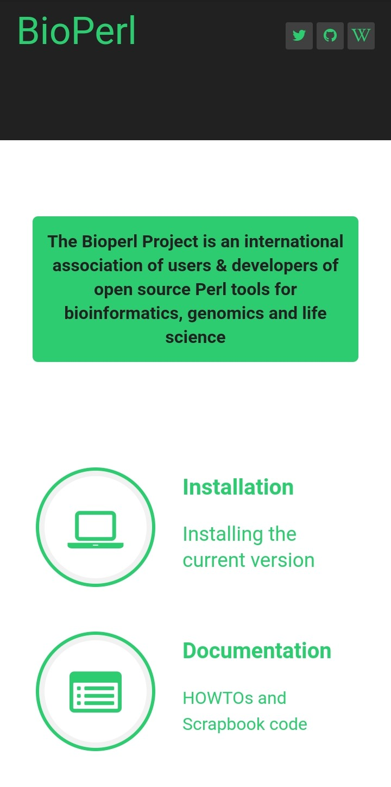

Visual Hierarchy
Netflix
Netflix uses a great method of arranging their graphical elements by order. By relying on principles relating to size, color, contrast, and more, this can influence how users interact and purchase services.
Visual hierarchy affects what you look at and focus on in every forms of design, whether it's an image, graphic design, web design, UX and UI designs. Visual Hierarvhy is key in every designing industries.
Contrast
Elementor
In this picture, when closely looing we see that contrast is use very well. There is a nice background color of pink which is use very nicely and the text are clearly written and can be seen, the get started botten is easily seen because of the background color and the text color that is being use.
More importantly, elementor uses good constrast to work with images on their site. They use contrast to place their images and text well. Remember to keep in mind where the object of each photo falls and what kind of movement or feel it creates.
Alignment
BioPerl

On this website, we can clearly see that all the elements and text on it are align properly. the elements on the site are align side by side to their texts.
From this site, I now understand that aligning everything on the web page is very important and can draw users attention to the site.